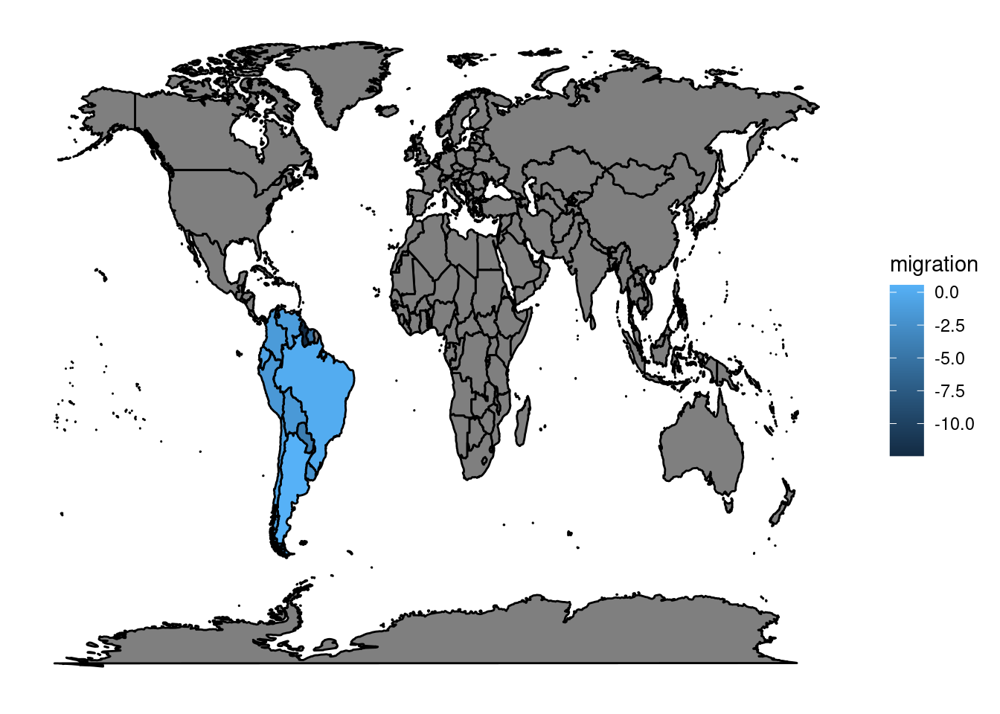
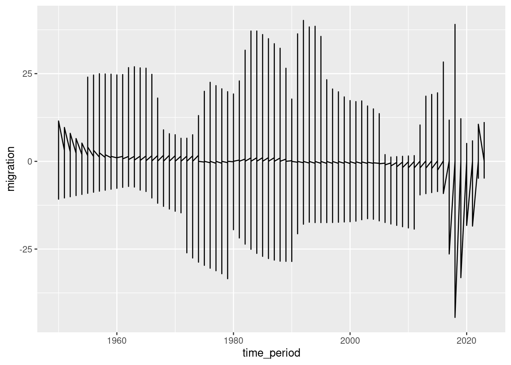
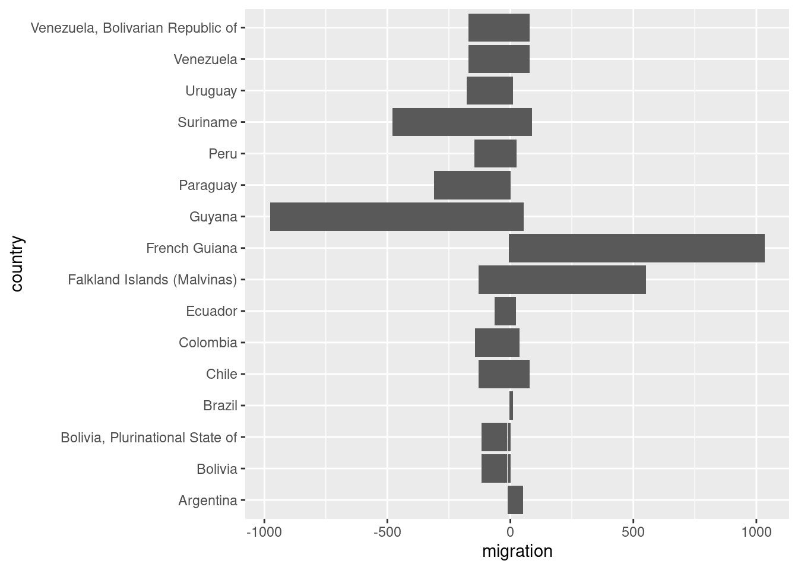
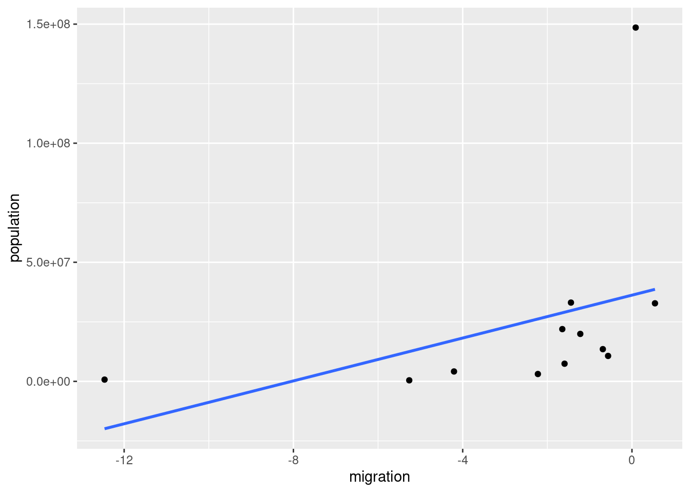
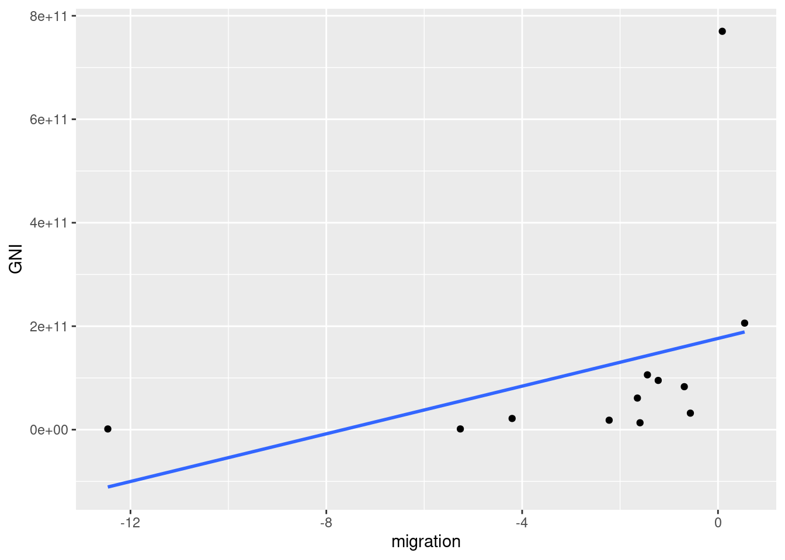

Assignment two
Emma Byrne. 19366281
South America’s Net Migration rate (per 1,000 population)
Migration occurs when an individual moves from one country to another. The net migration rates in the region of South America have been analysed and trends have been reported.
Understanding the figures on migration flows from South America helps to understand how various factors have influenced the trend of migration in this region. These include the intensification of migratory barriers, the economic crisis, and demographic changes in named countries (Cerrutti and Parrado, 2015). The inauguration of President Trump in 2016 increased xenophobia towards immigrants in the United States. The belief of the American population was that migration flows have increased exponentially in the last number of years, with many Americans noting the fact that they were “under attack by immigration” (Canizales and Vallejo, 2021, p.150). Migration flows reported prove to disregard this sentiment, demonstrating the low levels of migration that are still reported from this area.

Figure 1: Map of migration flows in South America.

Figure 2: Migration trend over time period from 1950 to 2020 showing the eradicate nature of the migration in the last number of years.

Figure 3: Bar chart demonstrating migration flows in named countries. Countries experiencing low levels of migration are further highlighted.

Figure 4: Scatterplot highlights the relationship between population and migration. This illustrates how as population increases so does migration. Countries that have a lower population experience less migration, juxtaposed with countries that have a higher population who experience greater levels.

Figure 5: Scatterplot assessing the relationship between GNI and population. Similar to the relationship depicted above, indicating how as GNI increases so does migration flows.
Bibliography:
Canizales, S.L. and Vallejo, J.A. (2021) ‘Latinos & Racism in the Trump Era’, Daedalus, 150(2), pp. 150–164. Available at: https://doi.org/10.1162/daed_a_01852.
Cerrutti, M. and Parrado, E. (2015) ‘Intraregional Migration in South America: Trends and a Research Agenda’, Annual Review of Sociology, 41(1), pp. 399–421. Available at: https://doi.org/10.1146/annurev-soc-073014-112249.